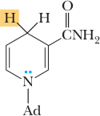
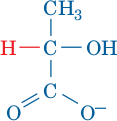
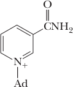
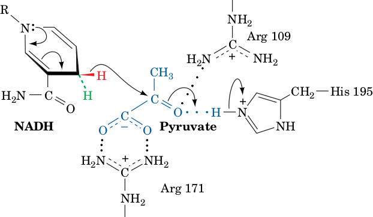
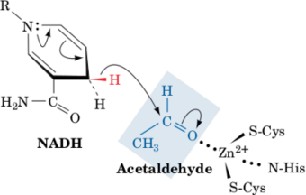

Fermentation: The Anaerobic Fate of Pyruvate
The three common metabolic fates of pyruvate produced by glycolysis are outlined in Fig. 15-16.
Under aerobic conditions, the pyruvate is completely oxidized via the citric acid cycle to CO2 and H2O.
Under anaerobic conditions, pyruvate must be converted to a reduced end product in order to reoxidize the NADH produced by the GAPDH reaction. This occurs in two ways:
Under anaerobic conditions in muscle, pyruvate is reduced to lactate to regenerate NAD+ in a process known as homolactic fermentation (a fermentation is an anaerobic biological process).
In yeast and certain other microorganisms, pyruvate is decarboxylated to yield CO2 and acetaldehyde, which is then reduced by NADH to yield NAD+ and ethanol. This process is known as alcoholic fermentation.
Thus, in aerobic glycolysis, NADH acts as a “high-energy” compound, whereas in anaerobic glycolysis, its free energy of oxidation is dissipated as heat.
Homolactic Fermentation Converts Pyruvate to Lactate
In muscle, during vigorous activity, when the demand for ATP is high and oxygen is in short supply, ATP is synthesized largely via anaerobic glycolysis, which rapidly generates ATP, rather than through the slower process of oxidative phosphorylation. Under these conditions, lactate dehydrogenase (LDH) catalyzes the oxidation of NADH by pyruvate to yield NAD+ and lactate.
Pyruvate | + |  NADH | + H+ | lactate dehydrogenase (LDH) ⇌ |  L-Lactate | + |  NAD+ |
This reaction is often classified as Reaction 11 of glycolysis. The lactate dehydrogenase reaction is freely reversible, so pyruvate and lactate concentrations are readily equilibrated.
In the proposed mechanism for pyruvate reduction by LDH, a hydride ion is stereospecifi cally transferred from C4 of NADH to C2 of pyruvate with concomitant transfer of a proton from the imidazolium moiety of His 195:
|  | ⟶ | L-Lactate | + NAD+ |
Both His 195 and Arg 171 interact electrostatically with the substrate to orient pyruvate (or lactate, in the reverse reaction) in the enzyme active site. The overall process of anaerobic glycolysis in muscle can be represented as
Glucose + 2 ADP + 2 Pi → 2 lactate + 2 ATP + 2 H2O + 2 H+
Lactate represents a sort of dead end for anaerobic glucose metabolism. The lactate can be either exported from the cell or converted back to pyruvate. Much of the lactate produced in skeletal muscle cells is carried by the blood to the liver, where it is used to synthesize glucose (Section 22-1F).
Contrary to widely held belief, it is not lactate buildup in the muscle per se that causes muscle fatigue and soreness, but the accumulation of glycolytically generated acid (muscles can maintain their workload in the presence of high lactate concentrations if the pH is kept constant).
Under anaerobic conditions in yeast, NAD+ for glycolysis is regenerated in a process that has been valued for thousands of years: the conversion of pyruvate to ethanol and CO2. Ethanol is, of course, the active ingredient of wine and spirits (more recently it has become an agriculturally renewable fuel);
CO2 so produced leavens bread.
Yeast produces ethanol and CO2 via two consecutive reactions:
Pyruvate | CO2 ⤻ ⟶ pyruvate decarboxylase |  Acetaldehyde | + NADH ⤷ ⟶ alcohol dehydrogenase | CH3HCH−OH Ethanol | + NAD+ |
The decarboxylation of pyruvate to form acetaldehyde and CO2 as catalyzed by pyruvate decarboxylase (an enzyme not present in animals).
The reduction of acetaldehyde to ethanol by NADH as catalyzed by alcohol dehydrogenase (Section 11-1C), thereby regenerating NAD+ for use in the GAPDH reaction of glycolysis.
TPP Is an Essential Cofactor of Pyruvate Decarboxylase
Pyruvate decarboxylase contains the coenzyme thiamine pyrophosphate (TPP; also called thiamin diphosphate, ThDP):
TPP, which is synthesized from thiamine (vitamin B1), binds tightly but noncovalently to pyruvate decarboxylase (Fig. 15-19).
The enzyme uses TPP because uncatalyzed decarboxylation of an α-keto acid such as pyruvate requires the buildup of negative charge on the carbonyl carbon atom in the transition state, an unstable situation:
This transition state can be stabilized by delocalizing the developing negative charge into a suitable “electron sink.” The amino acid residues of proteins function poorly in this capacity but TPP does so readily.
TPP’s catalytically active functional group is the thiazolium ring
The C2-H atom of this group is relatively acidic because of the adjacent positively charged quaternary nitrogen atom, which electrostatically stabilizes the carbanion formed when the proton dissociates. This dipolar carbanion (or ylid) is the active form of the coenzyme. Pyruvate decarboxylase operates as follows (Fig. 15-20):
Step 1 The ylid form of TPP, a nucleophile, attacks the carbonyl carbon of pyruvate.
Step 2 CO 2 departs, generating a resonance-stabilized carbanion adduct in which the thiazolium ring of the coenzyme acts as an electron sink.
Step 3 The carbanion is protonated.
Step 4 The TPP ylid is eliminated to form acetaldehyde and regenerate the active enzyme.
This mechanism has been corroborated by the isolation of the hydroxyethylthiamine pyrophosphate intermediate.
Vitamin B1 Deficiency Causes Beriberi and Wernicke-Korsakoff syndrome
The ability of TPP’s thiazolium ring to add to carbonyl groups and act as an electron sink makes it the coenzyme most utilized in α-keto acid decarboxylation reactions. Such reactions occur in all organisms, not just yeast. Consequently thiamine (vitamin B1), which is neither synthesized nor stored in significant quantities by the tissues of most vertebrates, is required in their diets. Thiamine deficiency in humans results in an ultimately fatal condition known as beriberi (Singhalese for weakness) that is characterized by neurological disturbances causing pain, paralysis, and atrophy (wasting) of the limbs and/or edema (accumulation of fluid in tissues and body cavities).
Beriberi was particularly prevalent in the late eighteenth and early nineteenth centuries in the rice-consuming areas of Asia after the introduction of steam-powered milling machines that polished the rice grains to remove their coarse but thiamine-containing outer layers (the previously used milling procedures were less efficient and hence left sufficient thiamine on the grains). Parboiling rice before milling, a process common in India, causes the rice kernels to absorb nutrients from their outer layers, thereby decreasing the incidence of beriberi. Once thiamine deficiency was recognized as the cause of beriberi, enrichment procedures were instituted so that today it has ceased to be a problem except in areas undergoing famine. However, beriberi occasionally develops in chronic alcoholics due to their penchant for drinking but not eating and because ethanol inhibits thiamine uptake by the gastrointestinal tract.
Another manifestation of thiamine deficiency is Wernicke-Korsakoff syndrome, a life-threatening condition characterized by dementia (confusion and severe memory loss), ataxia (unsteady stance and gait), and eye abnormalities resulting from the atrophy of several regions of the brain.
Reduction of Acetaldehyde and Regeneration of NAD+
Yeast alcohol dehydrogenase (YADH), the enzyme that converts acetaldehyde to ethanol, is a tetramer, each subunit of which binds one Zn2+ ion. The Zn2+ polarizes the carbonyl group of acetaldehyde to stabilize the developing negative charge in the transition state of the reaction.
|  | H+ ⤷ ⟶ ⤷ NAD+ | CH3HCH−OH Ethanol |
This facilitates the stereospecific transfer of a hydrogen from NADH to acetaldehyde.
Mammalian liver alcohol dehydrogenase (LADH) metabolizes the alcohols anaerobically produced by the intestinal flora as well as those from external sources (the direction of the alcohol dehydrogenase reaction varies with the relative concentrations of ethanol and acetaldehyde). Mammalian LADH is a dimer with signifi cant amino acid sequence similarity to YADH, although LADH subunits each contain a second Zn2+ ion that presumably has a structural role.
Fermentation Is Energetically Favorable
Thermodynamics permits us to dissect the process of fermentation into its component parts and to account for the free energy changes that occur. This enables us to calculate the efficiency with which the free energy of glucose catabolism is used in the synthesis of ATP. For homolactic fermentation,
Glucose → 2 lactate + 2 H+ ΔG°′ = −196 kJ · mol−1
For alcoholic fermentation,
Glucose → 2 CO2 + 2 ethanol ΔG°′ = −235 kJ · mol−1
Each of these processes is coupled to the net formation of 2 ATP, which requires ΔG°′ = +61 kJ · mol−1 of glucose consumed. Dividing ΔG°′ of ATP formation by that of lactate formation indicates that homolactic fermentation is 31% “efficient”; that is, 31% of the free energy released by the process under standard biochemical conditions is sequestered in the form of ATP. The rest is dissipated as heat, thereby making the process irreversible. Likewise, alcoholic fermentation is 26% efficient under biochemical standard state conditions. Under physiological conditions, where the concentrations of reactants and products diff er from those of the standard state, these reactions have thermodynamic effi ciencies of >50%. Anaerobic fermentation uses glucose in a profl igate manner compared to oxidative phosphorylation: Fermentation results in the production of 2 ATP per glucose, whereas oxidative phosphorylation yields up to 32 ATP per glucose (Section 18-3C). This accounts for Pasteur’s observation that yeast consume far more sugar when growing anaerobically than when growing aerobically (the Pasteur effect). However, the rate of ATP production by anaerobic glycolysis can be up to 100 times faster than that of oxidative phosphorylation. Consequently, when tissues such as muscle are rapidly consuming ATP, they regenerate it almost entirely by anaerobic glycolysis. (Homolactic fermentation does not really “waste” glucose since the lactate can be aerobically reconverted to glucose by the liver; Section 22-1F.) Certain muscles are specialized for the rapid production of ATP by glycolysis (Box 15-3).